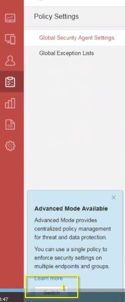

Configuring Policy Settings in Advanced Mode User Interface
- Adm to create very complex policies
OS
IP

Best prectices to create policy:
1) Use the default to configure policy settings for all
2) Create a separate policy for differents groups